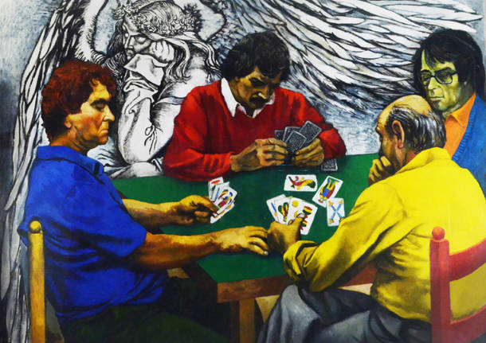
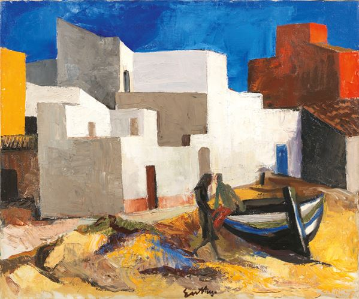
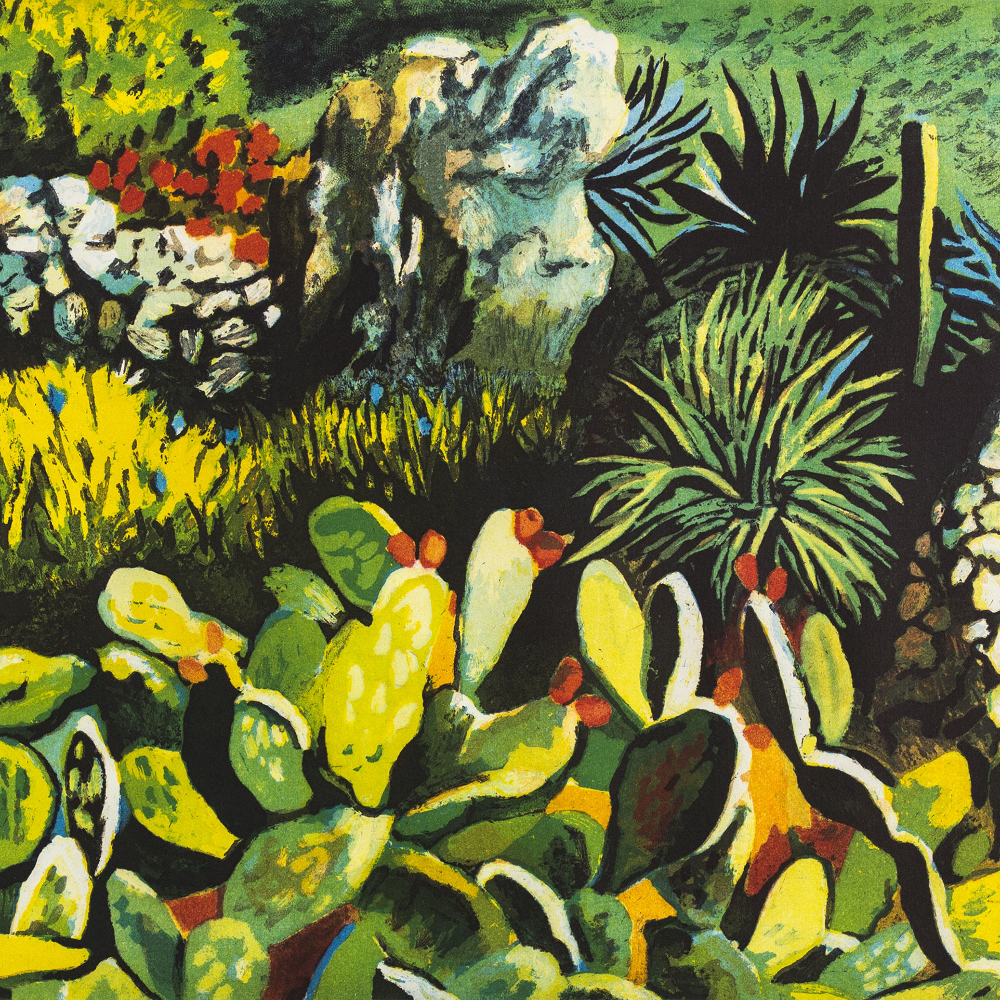
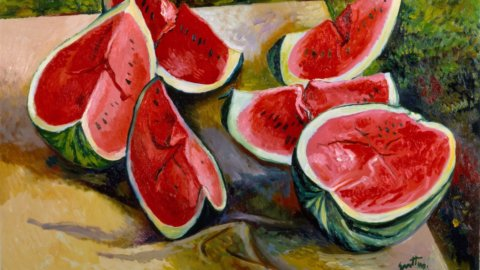
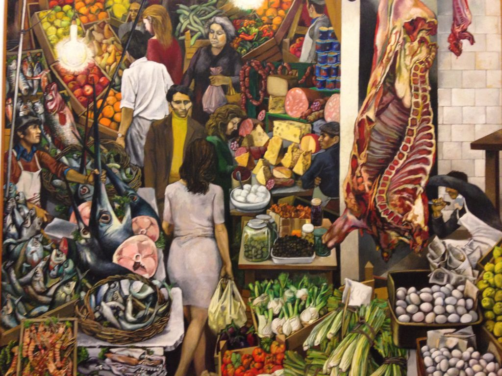
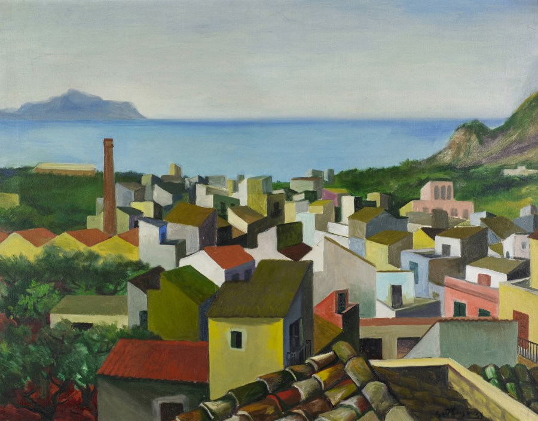

Renato Guttuso
Renato Guttuso (1912-1987) è stato un celebre pittore italiano aderente al movimento della Nuova Oggettività.
Le sue opere realistiche raffiguravano scene di vita popolare siciliana con uno stile narrativo e un'attenzione particolare ai dettagli.
Dipinti come "La Vucciria" e "Fuga dall'Etna" lo resero noto per il suo impegno sociale e politico.
Guttuso è considerato uno dei più importanti esponenti dell'arte italiana del Novecento.





